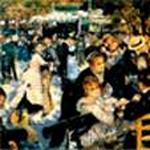

| Artist: | Pacifico |
| Title: | La Bella Epoca |
| Label: | Viajero Inmovil TROVA010VIR |
| Length(s): | 35 minutes |
| Year(s) of release: | 1972 |
| Month of review: | [11/2003] |
| 1) | Cancion Para Un Pequeno Ladron | 7.03 |
| 2) | No Eras Vos, No Era Yo | 3.13 |
| 3) | Ella Es Tu Hermana | 6.09 |
| 4) | Mi Magico | amigo |
| 5) | Una Estela Sin Final | 4.07 |
| 6) | Blanto De Un Atardecer1) | 4.12 |
| 7) | Escapatoria | 5.29 |